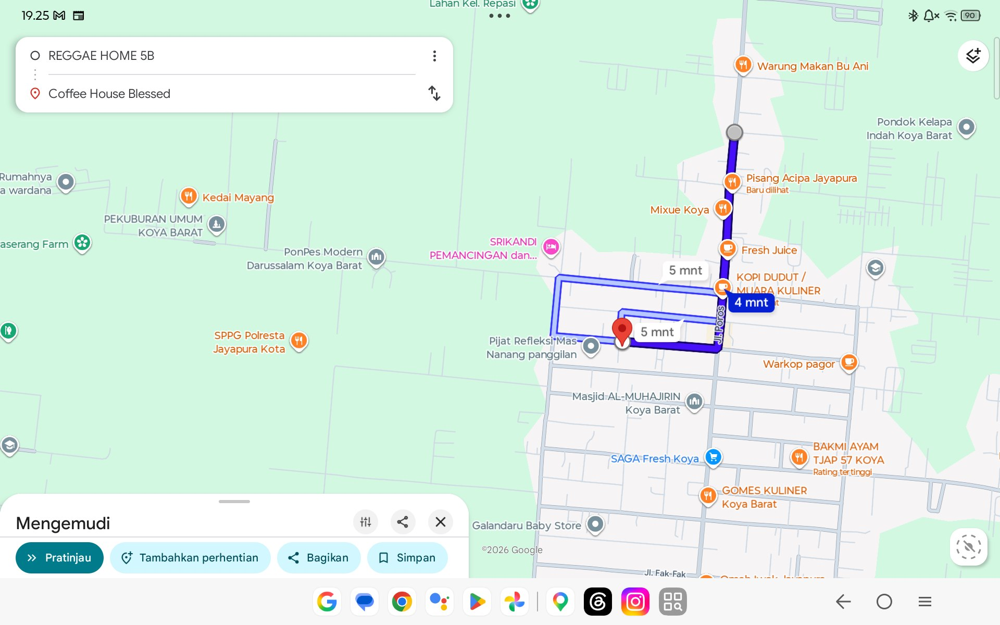
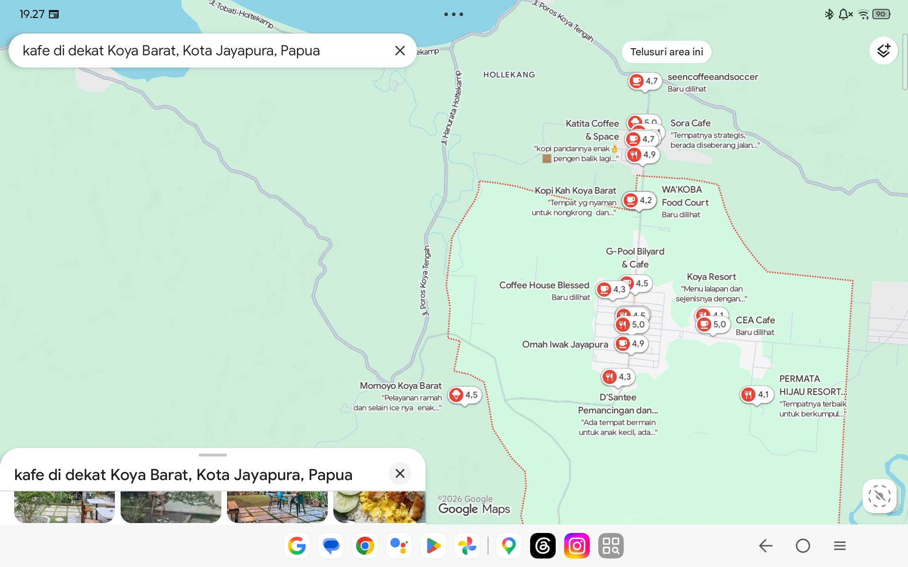
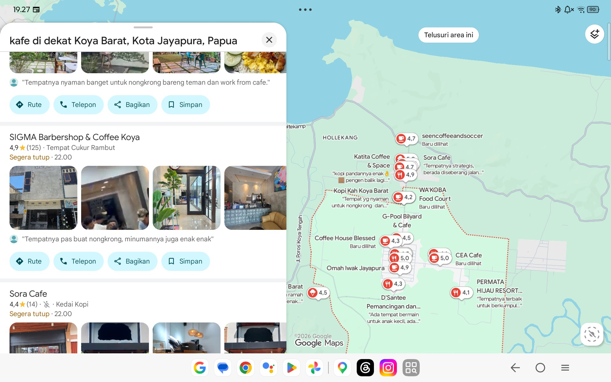
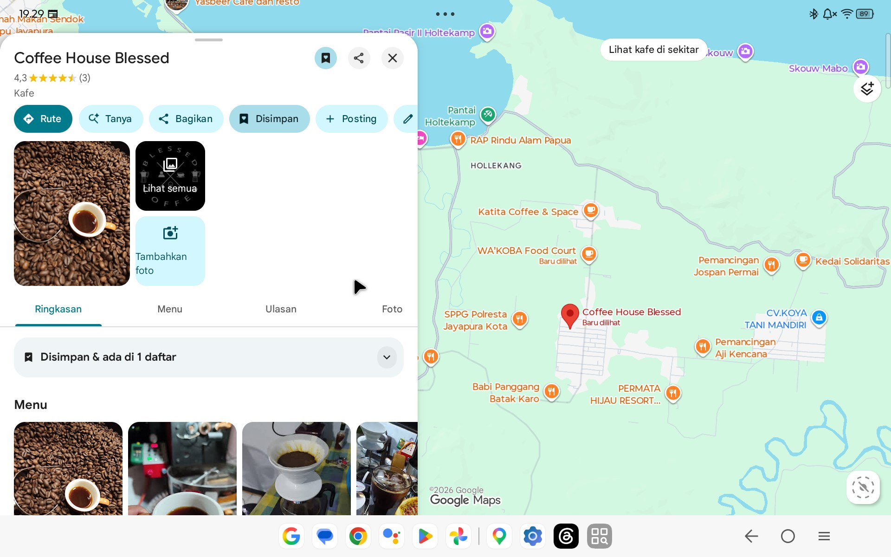

Mengapa Coffee House Blessed Kehilangan Puluhan Pelanggan Tiap Minggu?
Sebuah bedah data lapangan mengenai mengapa calon penikmat kopi di radius 1–2 KM tidak dapat menemukan kafe Anda di Google Maps, serta tawaran solusi perbaikan tuntas 100% Gratis & Tanpa Risiko.
Hanya 4-5 Menit Perjalanan,
Namun Gaib di Layar HP.
Lokasi kafe berada di posisi strategis Koya Barat (lintasan perumahan, kampus, dan akses wisata Holtekamp). Jarak riil dari pusat aktivitas terdekat hanya 1.5 – 1.8 KM (4-5 menit berkendara).



Kompetitor Menguasai Layar.
Blessed Tersingkir dari Top 10.
Saat calon pelanggan mencari "kafe di Koya Barat", layar mereka dipenuhi kafe lain seperti Katita (4.7★), Sora (4.4★), dan SIGMA Coffee (4.9★, 125 ulasan).

3 Ulasan Saja.
Vakum Selama 4 Tahun.
Rating 4.3 bintang dari 3 ulasan terdengar lumayan di awal, tapi tanggal ulasan yang sudah bertahun-tahun lalu memicu 2 dampak fatal:
Profil Belum Layak: Friction yang Mengusir Pelanggan.
Sebelum seseorang memutuskan melangkahkan kaki ke kafe baru, mereka butuh kepastian. Klik kartu di bawah untuk melihat detail masalah:
Website: Mengubah Kafe Biasa Jadi Brand Kredibel.
Website bukan sekadar brosur digital. Bagi bisnis kuliner modern, website adalah infrastruktur penunjang yang membuka pintu ke peluang-peluang besar:
Mini-Website Resmi
Halaman web satu pintu yang cepat, ringan diakses di jaringan Papua, dan terhubung langsung ke tombol WhatsApp kasir serta rute Google Maps.
Rencana Aksi: Dari Tidak Terlihat Menjadi Pilihan Utama.
Kami tidak sekadar memberi saran, tapi mengeksekusi seluruh perbaikan dari hulu ke hilir:
Kerjasama Ini 100% Gratis & Tanpa Risiko.
Pasti timbul pertanyaan wajar: "Kenapa gratis? Apa untungnya untuk Anda?" Berikut transparansi penuh komitmen kami:
Solusi Tuntas Tanpa Biaya
- ✓ Rp 0 Biaya Setup: Seluruh perbaikan data, foto aset, dan profil ditangani langsung.
- ✓ Infrastruktur Siap Pakai: Mendapatkan profil Google Maps profesional dan mini-website.
- ✓ Tanpa Janji Palsu: Kami tidak menjanjikan omset meledak mendadak, tapi memastikan kafe Anda tidak lagi dilewati orang.
- ✓ Nol Risiko Finansial: Pemilik kafe hanya perlu fokus menyajikan kopi terbaik.
Studi Kasus & Portofolio Emas
- ★ Real Case Study: Saya mendapatkan cerita nyata dan data pertumbuhan sebelum-sesudah perbaikan.
- ★ Bahan Marketing Utama: Hasil transformasi ini akan menjadi bukti portofolio paling berharga untuk agensi saya (NeuralKats) ke klien besar di masa depan.
- ★ Dukungan UMKM Lokal: Kepuasan pribadi melihat bisnis lokal di tanah Papua berkembang dan bersaing sehat.
"Satu-satunya kerugian adalah jika kita membiarkan kondisi ini berlanjut dan membiarkan puluhan calon pembeli setiap minggu masuk ke kafe kompetitor."
Mari Ngobrol Santai 15 Menit
di Coffee House Blessed.
Tidak perlu persiapan rumit. Cukup luangkan waktu sejenak untuk kita menyelaraskan menu, mengambil foto aset perdana, dan langsung mulai membenahi profil Maps kafe Anda.